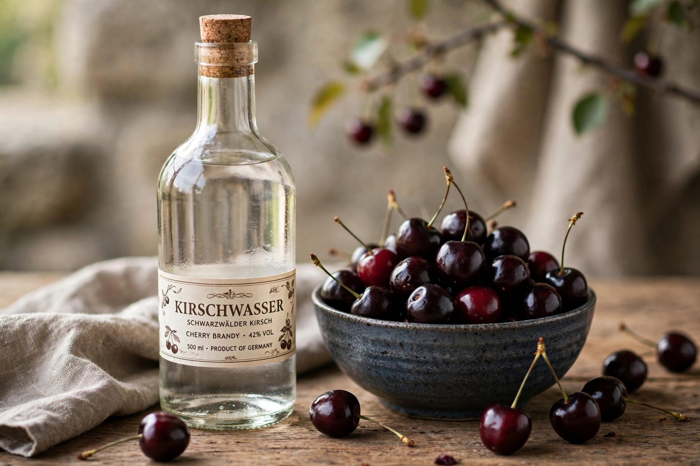

Kirsch

Type: Fruit brandy (eau de vie)
Origin: Germany (Black Forest), Switzerland, Alsace
Base: Morello cherries
Alcohol by volume: ~40–50%
Kirsch, or Kirschwasser (German for "cherry water"), is a clear, colourless fruit brandy traditionally distilled from the fermented mash of morello cherries, including their stones, which impart a subtle bitter-almond note. It originates in the Black Forest region of Germany and is also produced in Switzerland and eastern France. Unlike cherry liqueurs, kirsch is not sweet.
Production
Ripe dark cherries are crushed and fermented whole; the mash is typically double-distilled in copper pot stills. Roughly 10 kilograms of cherries are needed for a 750 ml bottle. In the European Union, kirsch is a protected category of fruit spirit with a minimum strength of 37.5% ABV; most bottlings are around 40–50%. Because the spirit is unaged (or aged only in glass or paraffin-lined vessels), it remains water-clear with an intense cherry-and-almond aroma.
Culinary use
Kirsch is an essential flavouring in Swiss cheese fondue, in Black Forest gâteau (Schwarzwälder Kirschtorte), and in desserts such as cherries jubilee and various chocolates; in Japan, by contrast, the cherry tree is celebrated for its blossom, the sakura, rather than its fruit. It is also drunk neat as a digestif in its regions of origin.